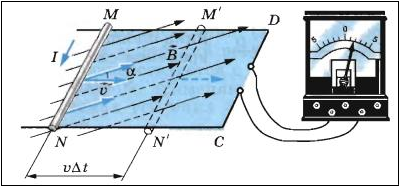

Явление электромагнитной индукции было открыто Майлом Фарадеем в 1831 году. Еще за 10 лет до этого Фарадей думал о способе превратить магнетизм в электричество. Он считал, что магнитное поле и электрическое поле должны быть как-то связаны.
Например, с помощью электрического поля можно намагнитить железный предмет. Наверное, должна существовать возможность с помощью магнита получить электрический ток. Сначала Фарадей открыл явление электромагнитной индукции в неподвижных относительно друг друга проводниках. При возникновении в одной из них тока в другой катушке тоже индуцировался ток. Причем в дальнейшем он пропадал, и появлялся снова лишь при выключении питания одной катушки. Через некоторое время Фарадей на опытах доказал, что при перемещении катушки без тока в цепи относительно другой, на концы которой подается напряжение, в первой катушке тоже будет возникать электрический ток. Следующим опытом было введение в катушку магнита, и при этом тоже в ней появлялся ток. Фарадеем была сформулирована основная причина появления тока в замкнутом контуре. В замкнутом проводящем контуре ток возникает при изменении числа линий магнитной индукции, которые пронизывают этот контур. Чем больше будет это изменение, тем сильнее получится индукционный ток. Неважно, каким образом мы добьемся изменения числа линий магнитной индукции. Например, это можно сделать движением контура в неоднородном магнитном поле, как это происходило в опыте с магнитом или движением катушки. А можем, например, изменять силу тока в соседней с контуром катушке, при этом будет изменяться магнитное поле, создаваемое этой катушкой.
Подведем краткий итог. Явление электромагнитной индукции – это явление возникновения тока в замкнутом контуре, при изменении магнитного поля в котором находится этот контур. Для более точной формулировки закона электромагнитной индукции необходимо ввести величину, которая бы характеризовала магнитное поле – поток вектора магнитной индукции.
Магнитный поток - это не что иное, как количество пронизывающих контур линий магнитной индукции. Чем больше их пронизывает контур, тем больше будет магнитный поток. Поэтому скорость изменения магнитного потока, можно представить как скорость изменения количество линий магнитной индукции, которые пронизывают контур. За некоторое достаточно малое время ∆t магнитный поток изменится на некоторую величину ∆Ф. Следовательно, сила индукционного тока в замкнутом контуре будет пропорциональна скорости изменения магнитного потока, который пронизывает поверхность, ограниченную этим контуром. Ii = ∆Ф/∆t.
Вектор магнитной индукции обозначается буквой B. Он будет характеризовать магнитное поле в любой точке пространства. Теперь рассмотрим замкнутый контур, ограничивающий поверхность площадью S. Поместим его в однородное магнитное поле. рисунок Между вектором нормали к поверхности и вектором магнитной индукции будет некоторый угол а. Магнитный поток Ф через поверхность площадью S называется физическая величина, равная произведению модуля вектора магнитной индукции на площадь поверхности и косинус угла между вектором магнитной индукции и нормалью к контуру. Ф = B*S*cos(a). Произведение B*cos(a) является проекцией вектора В на нормаль n. Поэтому форму для магнитного потока можно переписать следующим образом: Ф = Bn*S. Единицей измерения магнитного потока является вебер. Обозначается 1 Вб. Магнитный поток в 1Вб создается магнитным полем с индукцией 1 Тл через поверхность площадь 1 м^2, которая расположена перпендикулярно вектору магнитной индукции.
При внесении в катушку магнита в ней возникает индукционный ток. Если к катушке присоединить гальванометр, то можно заметить, что направление тока будет зависеть от того приближаем ли мы магнит или удаляем его. Магнит будет взаимодействовать с катушкой либо притягиваясь, либо отталкиваясь от нее. Это будет возникать вследствие того, что катушка с проходящим по ней током, будет подобна магниту с двумя полюсами. Направление индуцируемого тока будет определять, где у катушки будет находиться какой из полюсов. Если приближать к катушке магнит, то в ней будет возникать индукционный ток такого направления, что катушка обязательно будет отталкиваться от магнита. Если мы будет удалять магнит от катушки, то при этом в катушке возникнет такой индукционный ток, что она будет притягиваться к магниту. Стоит отметить, что не важно каким полюсом мы подносим или убираем магнит, всегда при подносе катушка будет отталкиваться, а при удалении притягиваться. Различие состоит в том, что при приближении магнита к катушке магнитный поток, который будет пронизывать катушку, увеличивается, так как у полюса магнита кучность линий магнитной индукции увеличивается. А при удалении магнита, магнитный поток, пронизывающий катушку, будет уменьшаться. Узнать направление индукционного тока можно. Для этого существует правило Ленца. Оно основано на законе сохранения. Рассмотрим следующий опыт. рисунок Имеется катушка с подключенным к ней гальванометром. К одному и краев катушки начинаем подносить магнит, например, северным полюсом. Количество линий, которые будут пронизывать поверхность каждого витка катушки, будет увеличиваться. Следовательно, будет увеличиваться и значение магнитного потока. Так как должен выполняться закон сохранения, должно возникнуть магнитное поле, которое будет препятствовать изменению магнитного потока. В нашем случае магнитный поток увеличивался, следовательно, ток должен течь в таком направлении, чтобы линии вектора магнитной индукции, создаваемые катушкой, были направлены в противоположном направлении линиям магнитной индукции, создаваемым магнитом. То есть они должны в нашем случае быть направлены вверх. Теперь воспользуемся правилом буравчика. Направляем большой палец правой руки по необходимому нам направлению линий магнитной индукции, то есть - вверх. Тогда остальные пальцы укажут, в какую сторону должен быть направлен индукционный ток. В нашем случае, слева на право. Аналогичный процесс происходит при удалении магнита. Убираем магнит, магнитный поток уменьшается, следовательно, должно возникнуть поле которое будет увеличивать магнитный поток. То есть поле линии магнитной индукции, которого будут сонаправлены с линиями магнитной индукции, создаваемыми постоянным магнитом. В нашем случае эти лини направлены вниз. Опять пользуемся правилом буравчика и определяем направление индукционного тока.
После возникновения понятия о явлении электромагнитной индукции, интересно было бы узнать её количественные характеристики. Согласно опытам сила индукционного тока, которая возникнет в замкнутом контуре, будет пропорциональна изменению магнитного потока, который пронизывает этот контур.
Ток в цепи будет возникать при направленном движении заряженных частиц, под действием некоторых сторонних сил. Электродвижущая сила, величина численно равная работе сил по перемещению, единичного положительного заряда вдоль замкнутого контура, называется электродвижущей силой. При изменении магнитного потока в контуре возникает электрический ток, а следовательно, возникает электродвижущая сила, которая в этом случае называется ЭДС индукции. Для её обозначение используют прописную букву Е. Мы будем обозначать ЭДС индукции Ei. Согласно закону Ома для замкнутой цепи, будет выполняться следующее равенство: Ii = Ei/R. Теперь сформулируем закон электромагнитной индукции. Он будет говорить об ЭДС индукции, так как сила тока, будет зависеть от свойств проводника, а ЭДС будет определяться только изменением магнитного потока, пронизывающего замкнутый контур.
ЭДС индукции возникающая в замкнутом контуре равна по модулю скорости изменения магнитного потока через поверхность, которую ограничивает этот контур. Ei = |∆Ф/∆t |. Теперь необходимо учесть направление индукционного тока, который возникает в контуре. Для этого в формуле необходимо раскрыть модуль и поставить перед частным знак минус. Ei = -∆Ф/∆t. Индукционный ток должен быть направлен в направлении против положительного обхода контура. ЭДС индукции будет отрицательна.
Магнитный поток через контур может изменяться по следующим причинам:
При помещении неподвижного проводящего контура в переменное магнитное поле.
При движении проводника в магнитном поле, которое может и не меняться со временем.
В обоих этих случаях будет выполняться закон электромагнитной индукции. При этом происхождение электродвижущей силы в этих случаях различное. Рассмотрим подробнее второй из этих случаев В данном случае проводник движется в магнитном поле. Вместе с проводником совершают движение и все заряды, которые находятся внутри проводника. На каждый из таких зарядов со стороны магнитного поля будет действовать сила Лоренца. Она и будет способствовать перемещению зарядов внутри проводника.
ЭДС индукции в данном случае будет иметь магнитное происхождение.
Рассмотрим следующий опыт: магнитный контур, у которого одна сторона подвижная, помещают в однородное магнитное поле. Подвижная сторона длиной l начинает скользить вдоль сторон MD и NC с постоянной скоростью V. При этом она постоянно остаётся параллельной стороне СD. Вектор магнитной индукции поля будет перпендикулярен проводнику и составлять угол а с направлением его скорости. На следующем рисунке представлена лабораторная установка для этого опыта:
Сила Лоренца, действующая на движущуюся частицу, вычисляется по следующей формуле: Fл = |q|*V*B*sin(a). Сила Лоренца будет направлена вдоль отрезка MN. Рассчитаем работу силы Лоренца: A = Fл*l = |q|*V*B*l*sin(a). ЭДС индукции - это отношение работы, совершаемой силой при перемещении единичного положительного заряда, к величине этого заряда. Следовательно, имеем: Ei = A/|q| = V*B*l*sin(a). Эта формула будет справедлива для любого проводника, движущегося в с постоянной скоростью в магнитном поле. ЭДС индукции будет только в этом проводнике, так как остальные проводники контура остаются неподвижными. Очевидно, что ЭДС индукции во всем контуре будет равняться ЭДС индукции в подвижном проводнике.
Магнитный поток через тот же контур, что и в примере выше, будет равняться: Ф = B*S*cos(90-a) = B*S*sin(a). Здесь угол (90-а) = угол между вектором магнитной индукции и нормалью к поверхности контура. За некоторое время ∆t площадь контура будет изменяться на ∆S = -l*V*∆t. Знак «минус» показывает, что площадь уменьшается. При этом за это время магнитный поток изменится: ∆Ф = -B*l*V*sin(a). Тогда ЭДС индукции равна: Ei = -∆Ф/∆t = B*l*V*sin(a). Если весь контур будет двигаться внутри однородного магнитного поля с постоянной скоростью, то ЭДС индукции будет равняться нулю, так как будет отсутствовать изменение магнитного потока. ЭДС индукции будет возникать и при повороте рамки внутри магнитного поля.